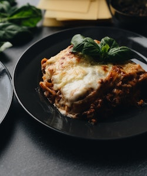

Lasagna!

Description
Lasagna is a classic Italian dish that is made by layering wide flat noodles with a tomato-based sauce, cheese, and often meat or vegetables. The dish is typically baked in the oven until the noodles are tender and the cheese is melted and bubbly. Lasagna is a hearty and comforting meal that is perfect for feeding a crowd or enjoying as leftovers.
The origins of lasagna can be traced back to ancient Greece, but the dish as we know it today is considered a quintessential Italian creation. The layers of noodles, sauce, and cheese can be endlessly customized to suit individual tastes, and lasagna has become a staple of Italian-American cuisine as well. Whether served as a traditional main course or as an inventive appetizer or side dish, lasagna remains a beloved and iconic dish around the world.
Ingredients:
- Lasagna noodles (either oven-ready or boiled)
- Tomato-based sauce (such as marinara or Bolognese sauce)
- Ground meat
- Ricotta cheese
- Shredded mozzarella cheese
- Grated Parmesan cheese
- Eggs
- Eggs
- Garlic
- Salt and pepper
- Olive oil (for cooking the meat or vegetables and for greasing the baking dish)
Steps:
- Preheat the oven to 375°F (190°C).
- Boil lasagna noodles in a large pot of salted water for 8-10 minutes until al dente (cooked but still firm). Drain and rinse the noodles with cold water.
- Brown ground beef or sausage and drain excess fat.
- Mix ricotta cheese, egg, parmesan cheese, salt, pepper, and Italian seasoning in a bowl.
- Grease a 9x13 inch baking dish and add a layer of pasta sauce.
- Layer noodles, ricotta mixture, sauce, and mozzarella cheese.
- Repeat layering.
- Finish with a layer of noodles, sauce, and mozzarella cheese.
- Cover with foil and bake for 25 minutes.
- Remove foil and bake for an additional 25 minutes.
- Let lasagna cool for a few minutes before serving.
Enjoy it!